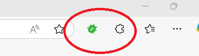
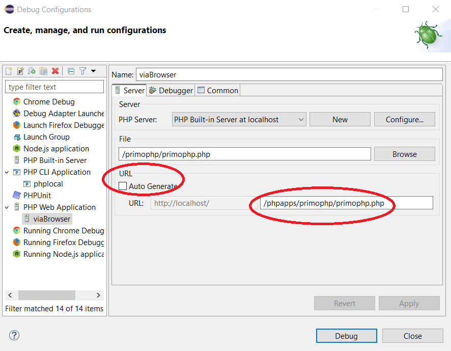

Raccogliere le operazioni necessarie per ottenere l'ambiente di sviluppo per PHP funzionante in ECLIPSE con debug classico.
Seguendo le istruzioni di questo video:
https://www.youtube.com/watch?v=_cSQKOajwlAConfigure XDebug With Eclipse PDT (PHP Development Tool ) Windows 11 2022
Anche il seguente video serve come guida:
how to debug php in eclipse from web browser
comunque cercando "eclipse and xdebug setup for php debugging" si trovano anche diverse altre spiegazioni.Ci sono alcune cose non proprio chiare e quindi ho riassunto qui i punti importanti.
esso fornisce un servr PHP + DB
la cartella C:\xampp\htdocs contiene i files che vengono pubblicati dal server visibili su localhost (127.0.0.1)
Poi ho installato Eclipse for PHP e quindi ho puntato la cartella di lavoro (Workspace) in C:\xampp\htdocs, oppure, meglio, ho creato una sottocartella C:\xampp\htdocs\phpapps, in tal modo i progetti PHP sono visibili da localhost.
Ho modificato le proprietà del file C:\xampp\xampp-control.ini assegnando il controllo completo a tutti gli utenti di windows altrimenti quando chiudi il pannello di controllo si genera un errore di accesso al file.
Ho aggiunto l'estensione xdebug scaricando il file php_xdebug.....dll dal sito https://xdebug.org/ e copiandolo in xampp\php\ext e modificato il file xampp\php\php.ini aggiungendo in fondo al file le righe seguenti:
[XDEBUG] zend_extension = "C:\xampp\php\ext\php_xdebug.dll" xdebug.mode=debug xdebug.client_host = 127.0.0.1 xdebug.client_port = 9003A dire il vero va bene anche la porta 9000 (vedere nel seguito).
Infine ho configurato eclipse come da video iniziale:
In un nuovo progetto PHP bisogna aggiungere, nelle configurazioni da lanciare (Run -- Debug Configurations...), la voce PHP CLI Application.
Attivare "Alternate PHP" e scegliere "installed PHP" quindi EDIT
puntarlo all'eseguibile "xampp\php\php.exe"
e poi nel tab Debugger
scegliere Xdebug su porta 9003
A dire il vero va bene anche la porta 9000 (vedere nel seguito).
Infine come PHP File puntare al sorgente di interesse e fine.
Non usare altri modi che vanno in conflitto. Non attivare xampp, si avvia da debugger.
Per questo secondo modo, rispetto al primo bisogna fare solo due cose
andare sotto Window -->> Preferences
e poi PHP -->> Debug -->> Debuggers
quindi aprire la configurazione di Xdebug e cambiare la voce
"Accept remote session (JIT)" in "any" oppure "prompt"
Come requisito base bisogna avviare XAMPP prima di avviare ECLIPSE.
Adesso posso quindi avviare, in eclipse, la seconda configurazione di debug, che si mette in attesa dei comandi del browser,
Adesso posso attivare l'estensione XDEBUG nel browser (icona del baco verde), ed accedere alla pagina del progetto via localhost,
eclipse si blocca sulla prima riga (o su un breakpoint). Qui posso vedere le variabili, eseguire un passo per volta, procedere in run...
A questo punto, quando la pagina web è inviata al browser che l'aspetta, la sessione si conclude ma, essendo un processo multisessione, basta rinfrescare la pagina dal browser per ribloccare l'esecuzione sulla prima riga.
Quando si configura la "PHP Web Application" ho scoperto quanto sia importante inserire il percorso corretto del file da usare, come ho evidenziato nei cerchi rossi dell'immagine che segue:
Per errore non avevo inserito la prima parte "/phpapps/" dato che avevo lasciato la spunta su "Auto Generate". Questo provocava l'avvio del browser su un percorso inesistente visto che avevo messo tutto sotto "phpapps" con conseguente frustrazione. Però ho scoperto che se dal browser si accede al percorso corretto questo provoca l'avvio della sessione di debug in ECLIPSE, per cui fare attenzione alla cosa.
Adesso, ogni volta che col browser accedo alla pagina del progetto, automaticamente ECLIPSE entra in debug, per disattivarlo devo cambiare "any" in "off" nella voce "Accept remote session (JIT)" (vedi qui sopra). In alternativa basta avviare ECLIPSE prima di XAMPP ma risulta meno comodo.